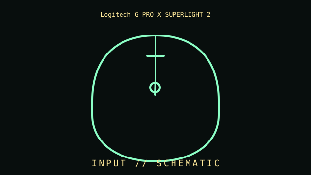

[ INDIVIDUAL COMPONENT // INPUT DEVICES ]
Logitech G PRO X SUPERLIGHT 2
60 g LIGHTSPEED mouse with HERO 2 sensor, LIGHTFORCE switches, and USB-C. This entry identifies this product generation and distinguishes important interface and revision differences.

MODEL IDENTIFICATION: Check the label for the complete model, revision, regional SKU, accessories, and current manufacturer documentation before installation.
Specifications
| Catalog subcategory | Mice and trackballs |
|---|---|
| Catalog identity | Logitech G PRO X SUPERLIGHT 2 |
| Era / family | Wireless esports mouse, SUPERLIGHT 2 generation |
| Product-specific features | HERO 2 optical sensor rated up to 44,000 DPI; LIGHTFORCE switches; five-button ambidextrous shell; 60 g nominal mass. |
| Interface | LIGHTSPEED 2.4 GHz USB receiver; USB-C charging and wired data. Bluetooth is not specified for this model. |
| Compatibility guidance | Basic pointer input works through the receiver; DPI, report rate, button mapping, and firmware require Logitech G HUB. Preserve receiver association. |
| Variants and service note | Second-generation PRO X SUPERLIGHT, not original SUPERLIGHT. DPI maximum is a selectable vendor limit, not a precision measurement. |
Installation & compatibility checks
- Record the exact model/revision, interface mode, receiver or cable identity, firmware, driver version, and supported host before testing.
- Check connector, power, protocol, OS/driver, and application support separately; physical connector fit alone does not establish feature compatibility.
- For wireless models, preserve original receivers and pairing data. Test wired and radio modes independently where both are provided.
- Do not infer performance from manufacturer maximums alone; note settings, application, host, and measurement method for measured results.
Model notes
Second-generation PRO X SUPERLIGHT, not original SUPERLIGHT. DPI maximum is a selectable vendor limit, not a precision measurement.
Basic pointer input works through the receiver; DPI, report rate, button mapping, and firmware require Logitech G HUB. Preserve receiver association.
Sources & further reading
- Manufacturer — Logitech G PRO X SUPERLIGHT 2 product specificationsProduct reference; confirm exact variant and regional SKU.
- Manufacturer — Logitech G PRO X SUPERLIGHT 2 support and manualsSupport reference for drivers, manuals, and revision-specific guidance.
Manufacturer model references are authoritative for exact revisions and regional variants. Specifications can differ by package, firmware, region, and driver generation.